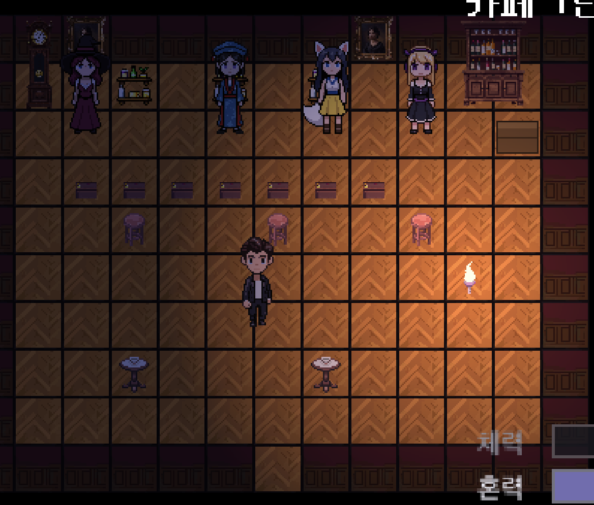

📄 옥자님께 PDF로 드리는 법 — ① 아래 맨 위 히어로 자리에 밤 카페 스크린샷을 넣으려면,
이 HTML과 같은 폴더에 screenshots/cafe-night.png 로 캡처를 저장하면 자동으로 들어갑니다(없으면 안내 상자가 뜸).
② 브라우저에서 Cmd + P → 대상: PDF로 저장 → 배경 그래픽 켜기. 이 노란 안내 상자는 인쇄에 안 나옵니다.
Dear My Naraka — 게임 소개
스타듀밸리 같은 농사·생활 RPG. 무대만 나라카 컨셉카페의 세계관(저승)으로 옮겼습니다.
플랫폼: Steam / PC · 엔진: Godot

📷
밤 카페 내부 스크린샷 자리
불 켜진 카페 안 — 뒷벽에 옥자·미호·멜·바나가 서 있고, 손님 착석, 아래쪽에 플레이어. screenshots/cafe-night.png 로 저장하면 여기에 자동으로 들어갑니다.
현재 빌드에서 직접 찍은 화면 — "목업이 아니라 진짜 돈다"의 증거.
1. 한눈에
장르: 농사·낚시·채광·관계를 쌓는 스타듀밸리형 생활 시뮬레이션.
무대: 저승(나라카). 그 안의 나라카 컨셉카페가 게임의 중심 명소이자 직접 운영하는 공간.
플레이어: 새로 끌려온 카페의 네 번째 직원. 농사를 짓고, 카페를 굴리고, 식구들과 관계를 쌓으며 하루하루를 산다.
분량 감각: 스타듀처럼 끝없이 머무를 수 있는 코지(cozy) 게임. 단, 멀리 깔린 하나의 미스터리가 클라이맥스로 해결되는 이야기 척추도 있다.
한 줄 요약:"스타듀밸리 + 우리 카페 + 속죄라는 한 겹."
2. 스타듀밸리와 비교 — 시스템 하나하나
옥자님이 스타듀를 잘 아시니, 카테고리마다 세 칸으로 보면 가장 빠릅니다.
그대로 이어받음 = 메카닉은 스타듀와 똑같고, 이름·외피만 저승식.
나라카식으로 바꿈 = 의미 있게 다시 설계한 것.
나라카에만 있음 = 스타듀엔 없는 것.
※ 개별 작물·물고기·광물 같은 콘텐츠 목록은 어차피 전부 저승식으로 자체 제작하므로 여기선 시스템만 다룹니다.
2-1. 시간 · 환경 · 절기
그대로 이어받음
나라카식으로 바꿈
나라카에만 있음
하루 실시간 시계 · 강제 취침 → 다음 날 계절 전환 시 작물 사멸 날씨가 농사·낚시에 영향 / 1일 예보
"내 죄는 무엇이었나"가 메인 스토리 훅. 아직 자기 죄를 인정조차 못 한 유일한 한 명.
5. 메인 스토리 (※ 핵심 반전 포함 — 승인용 전체 공개)
옥자님께 이야기 방향을 보여드리고 합의하기 위해 게임의 비밀까지 전부 공개합니다.
완성된 게임에서는 플레이어가 직접 발견하는 재미로 숨겨집니다.
모델 — 스타듀식 "창발형"
강제 줄거리 게임이 아닙니다. 실제 "이야기 체험"은 미호·멜·바나의 호감도 단계별 속죄 서사에서 나오고, 그 위에 플레이어 본인의 미스터리가 멀리 깔립니다. 메인 스토리 = 캐릭터 속죄 서사들의 총합 + 플레이어의 미결의 죄.
핵심 반전 — 옥자와 플레이어
옥자는 플레이어의 생전 은인이자 연인이었다. 타인의 액운·저주를 삼키며 약을 짓던 고독한 약사(무녀)로, 탁기로 죽어가던 플레이어를 살린 사람.
그날 밤(대화재). 약방의 대화재에서 옥자는 자기 존재·기억을 대가로 플레이어를 살리고 나라카의 마녀로 귀속됐다.
플레이어의 '미결의 죄' = 옥자가 살려낸 목숨을 일에 묻혀 인연을 못 돌본 외면·부재. 방화·도박 같은 큰 죄가 아니라 스스로 잘못이라 느끼지 못한 조용한 죄.
기억 봉인. 플레이어를 살려 돌려보내는 금기 계약이 옥자에 대한 진실을 플레이어 안에 가라앉혔다. 삭제가 아니라, 스스로 들여다봐야 닿는 봉인. 옥자를 알아보지 못하는 것 자체가 그 죄의 증상.
세 동료가 쥔 세 조각
미호 = 옥자의 마음(감정 — 숨긴 속정을 읽는다)
멜 = 옥자의 기록(사실 — 봉인된 죄목의 존재를 안다)
바나 = 옥자의 행동(목격 — 무방비한 옥자를 본다)
앙상블 비극 — "그날 밤" & 해방
메인 4인뿐 아니라 조연 11인 전원이 그 하나의 밤에 인과로 묶입니다(라쇼몽식 증인). 단, 누구도 중심 진실을 말로 풀어주지 않습니다 — 봉인은 본인이 스스로 닿아야만 풀린다는 세계 규칙 때문.
플레이어가 진실을 스스로 재구성해 속죄를 완성하면, 해방의 순간 봉인이 풀려 기억이 돌아옵니다("아, 당신이었군요"). 재구성된 사랑 위에 귀환의 카타르시스가 이중으로. 그 후로도 코지한 일상은 계속됩니다.
6. 조연 캐릭터 — 나루 마을 결혼 가능 주민 11인
메인 4인과 별개로, 게임을 위해 새로 디자인한 결혼 가능 주민들입니다. 옥자님께 처음 소개드리는 캐릭터라 매력·생전 죄·결혼 후 반전까지 함께 보여 드립니다. 설계 규칙: 죄는 그 요괴 설화의 본질과 공명하고, 결혼 후 반전 로맨스의 축이 됩니다(평소 매력적 겉면 ↔ 결혼 후 드러나는 진짜 면모). 비인간 요괴는 죄가 없고, 반전은 본성의 사랑스러운 심화입니다.
남요괴 (5)
깨비 — 도깨비
친구→연인 · 장난꾸러기 · 직진남 · 씨름·괴력·도깨비방망이
평소 매력: 툭툭 장난 ↔ 힘쓰는 일엔 1등으로 달려오는 동네 오빠.
생전 죄: "모든 걸 장난으로 만들어 진심을 한 번도 못 보인 죄."
반전: 영원한 장난꾼 → 결혼 = 생전 처음 "진심"을 택함.
켄 — 언데드 거인
듬직함 · 대형견 · 순정파 솜사탕 · 2m 거구의 순한 미남
평소 매력: 거구인데 세상 무해·섬세(찻잔은 조심), 식물 사랑, 칭찬하면 얼굴 가림.
생전 죄: "겉모습 때문에 괴물 취급받다 단 한 번 터진 분노로 사람을 해친 죄."
반전: 무서운 겉 ↔ 솜사탕 속 → 결혼 = 주인공만은 그 힘을 '지킴'으로 받아줌.
미르 — 이무기
미소년 · 신비 · 츤데레 · 냉미남 · 승천 실패한 큰 뱀
평소 매력: "흥미 없다"며 매일 구석, 곤란할 때 조용히 해결+생색 없음.
생전 죄: "'용(완성·인정)'에 집착해 곁의 인연을 내치고 홀로 천 년을 버틴 오만·고독의 죄."
반전: 차가운 가면 → 마음 열면 오직 주인공에게 집착·응석 = "나만의 용."
루카 — 늑대인간
처연 병약미 · 반항아 · 야생→길들여짐 · 저주·보름달·평생 한 반려
평소 매력: 거친 반항아지만 주인공 앞 처연, 보름달 가까우면 본능 억누르며 끙끙.
생전 죄: "끓는 충동을 다스리지 못하고 본능에 몸을 맡긴 채 곁을 거칠게 망가뜨린 죄."
반전: 보름달 억누르기 = 생전 졌던 싸움을 매달 다시 싸움 → 결혼 = 오직 주인공 손길에만 얌전.
강림 — 폐직(廢職) 저승사자
까칠 차도남 · 정장 핏 · 의외의 허당 · 권능 잃은 전직 저승사자
평소 매력: 완벽주의·이성·차가움 ↔ 현대문물·달콤한 디저트에 약한 허당 갭.
생전 죄: "직무·규칙 뒤에 감정을 숨긴 채 한 영혼에게 마땅한 자비를 끝내 베풀지 않은 죄."
반전: 평생 인도만 하던 자가 처음 사랑을 배움 → 서툴게 질투하고 고장 남.
메인 스토리에서 그날 밤 금기 계약의 집행자이기도 하나, 봉인 법칙에 묶여 말로는 풀어주지 못함.
여요괴 (3)
설화(雪花) — 설녀
첫사랑 · 청순 가련 · 수줍은 얼음 공주 · 마음은 따뜻한데 몸이 차가움
평소 매력: 차가운 몸이 해될까 맴돎, 칭찬받으면 영하로(귀여운 버릇).
생전 죄: "따뜻함을 포기한 채 차가운 본질이 곁의 이들을 얼려 해치도록 내버려 둔 체념의 죄."
반전: 마음은 열렸으나 몸이 막음 → 결혼 = 사랑 위해 생전 처음 "따뜻해지는 법"을 연습(순애보).
스칼렛 — 메두사
걸크러시 · 치명적 섹시 · 당당한 플러팅 마스터 · 트렌디·낮
평소 매력: 석화 소문도 웃어넘김, 나른·매운맛 플러팅, 카리스마 리드.
생전 죄: "치명적 매력으로 사람을 '돌처럼' 가둬두고 누구에게도 마음을 안 준 교만·소유의 죄."
반전: 여유만만 ↔ 처음 페이스 잃고 빠짐 → 결혼 = 처음 자기를 내어줌.
세레나 — 인어 (최고 비용 — 마지막 추가)
나른한 천재 · 목소리 여신 · 낭만 집순이
평소 매력: 매사 귀찮아하는 집순이지만 노래는 마을을 홀리는 재능, 주인공 음료에 가장 행복.
생전 죄: "세상을 흔드는 목소리를 무관심 속에 흘려, 노래에 파멸한 이들을 돌아보지 않은 방관의 죄."
반전: 평생 누워만 있던 그녀가 사랑 위해 처음 움직임(바다 버리고 육지로).
비인간 요괴 (3) — 죄 없음, 본성의 심화
모찌 — 슬라임 (나라카 출생)
말랑 젤리 · 형태 변신 · 흡수형 플러팅 · 카페 과일/푸딩에서 태어남
평소 매력: 투명 에메랄드빛, 하트·별 형태 변신, 쫀득 힐링, 어깨/머리 위 찹쌀떡.
본성 축: "흡수만 하던 존재 → 내어주는 존재로." 결혼 후 침대에서 이불처럼 껴안겨줌.
네오 — 오토마타/기계 인형 (나라카 제작)
태엽 인형 · 이모티콘 눈빛 · 버그 난 감정 · 만물상 점주
평소 매력: "이해할 수 없는 데이터" 뚝딱거림 ↔ 오차 없는 1등 비서. 만물상에서 씨앗·잡화 판매.
본성 축: "순수 논리 기계 → 사랑이라는 '오류'로 처음 감정을 표현." 기계음 고백("핵심 코어 연산은 평생 당신만을 향해 작동합니다").